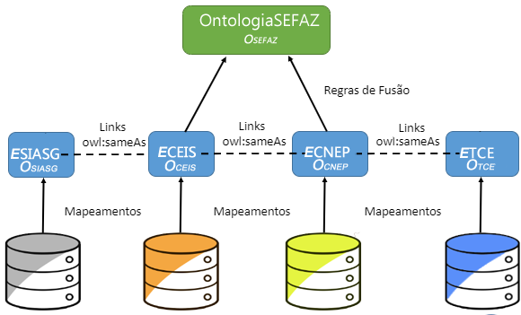

Mashup CDGES (Compras e Despesas Governamentais e Empresas Sancionadas)
1. Descrição:
Com intuito de descobrir conhecimento acerca de eventuais compras governamentais realizadas por empresas sancionadas, esse mashup foi construindo utilizando as bases do SIASG, CEIS, CNEP e TCE.
O mashup é composto por informações acerca de despesas (compras, contratos e outros) efetuadas por órgãos federais, estaduais e municipais com empresas sancionadas (inidôneas, suspensas e punidas.
Através do mashup, torna-se possível responder questões como:
Qual o porte de funcionários e a natureza jurídica das empresas sancionadas em um determinado estado?
Qual o fornecedor que mais fornece pra cada UASG?
Quantidade de itens mais envolvidos em processos de compras por empresas inidôneas presentes em um determinado ramo de negócio?
Qual a quantidade de contratos agrupados por cidade e / ou por ano?
Quais são os contratos firmados com fornecedores que já constavam e ainda constam no CEIS ou CNEP?
Para cada UASG, qual o percentual de fornecedores que está atualmente com alguma sançã̧o?
Ramo de negócio com maior quantidade de fornecedores atualmente sancionados?
Quais empresas fornecedoras cadastrados no SICAF, que não têm restrições, que podem fornecer determinado produto a um município?
Quais fornecedores possuem maior número de sanções no decorrer dos anos?
Quais liquidações, empenhos e pagamentos foram realizados para empresas inidôneas após a declaração de inidoneidade?
Quais contratos foram assinados após a declaração de inidoneidade?
Quais empresas apresentaram certificados de regularidade falsos ou cometeram falsidade ideológica?
Qual o item mais comprado por cada UASG?
Qual o tipo de licitação mais realizada por uma UASG?

Figura 1: Representação da Integração Semântica realizada no processo de construção do Mashup CDGES
2. Especificação da Visão do Mashup sobre a Ontologia de Dominio:
{kind=link}
{kind=link}
{kind=link}
{kind=link}